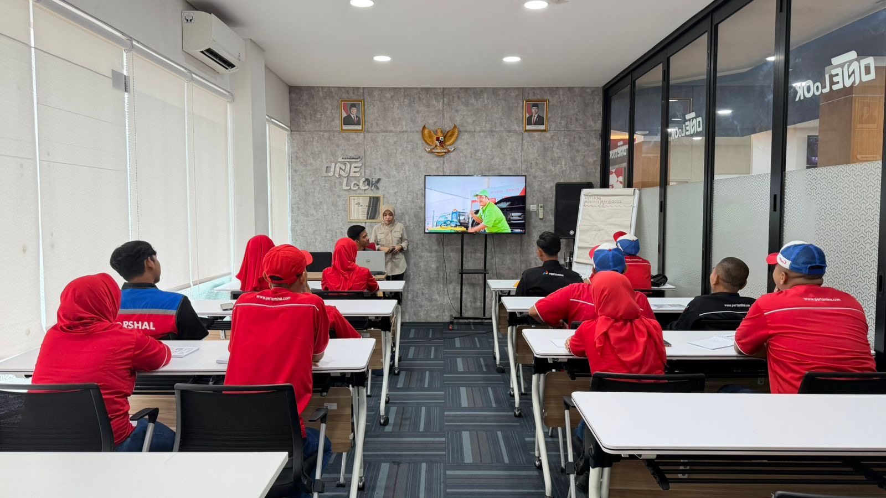
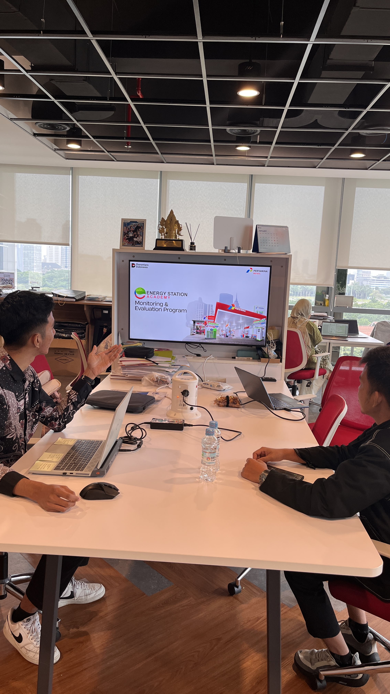

Mystery Shopper Program - Monitoring & Evaluation
Human Capital Business Partner (Developer) Intern · PT Pertamina Retail · Nov 2025 – May 2026
Tools & Skills: Microsoft Excel (Pivot Table, Dashboarding), Google Forms, Data Cleaning & Validation, Performance Analysis, Management Reporting, Stakeholder Coordination.
A monitoring and evaluation initiative to assess whether service training for SPBU DODO operators was consistently applied in daily operations, improving service quality and customer experience.
- Program Monitoring: Coordinated M&E activities covering 500+ operators across 100+ SPBU stations in 4 regions.
- Data Quality & Validation: Cleaned and validated Google Forms results, resolving operator status changes (resign), closed stations, and uniform non-compliance.
- Performance Analysis: Evaluated operator scores across three assessment categories: Grooming, Basic Service, and Product Knowledge.
- Process Evaluation: Identified limitations in the assessment form, especially for evaluators using motorbikes, and provided recommendations for improvement.
- Dashboard & Reporting: Developed an Excel-based dashboard and consolidated reports to support performance reviews by the HC team, Managers, and Vice President.
Data Accuracy & Monitoring
Consolidated and validated field assessment data from Google Forms to ensure accuracy and consistency across operators, SPBU stations, and regions. Analyzed performance scores and monitored evaluation progress to identify service gaps and follow up on the implementation of training in the field.
Assessment Categories
-
Grooming
Appearance and compliance with uniform standards.
-
Basic Service
Service behavior and application of operational procedures.
-
Product Knowledge
Understanding of products and related service information.
Stakeholder Coordination & Reporting
Collaborated with Mystery Shopper evaluators and regional stakeholders to verify field observations, resolve data discrepancies, and support evaluation activities. Prepared consolidated performance reports and presentation materials for the HC team, Managers, and Vice President to support management reviews and further operator development.
Project Moments

Data Insights & Reporting

Training Operator

Project Execution & Monitoring

Like what you see?
Let’s get started!
 Hire Me
Hire Me
For Your Team!